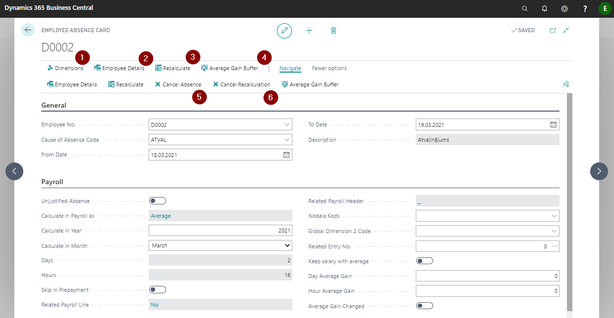
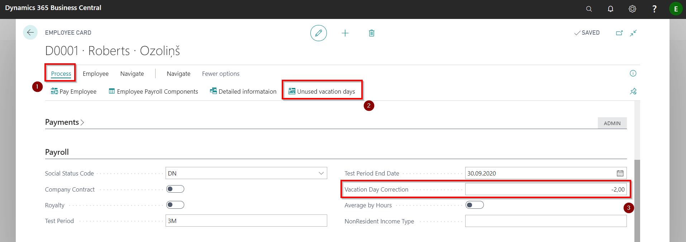
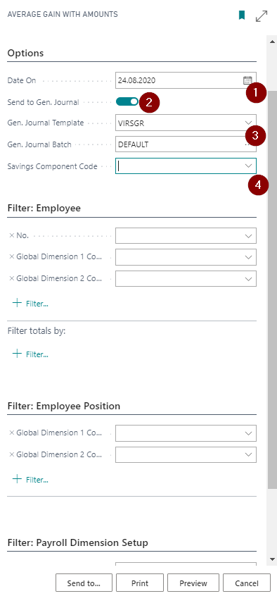
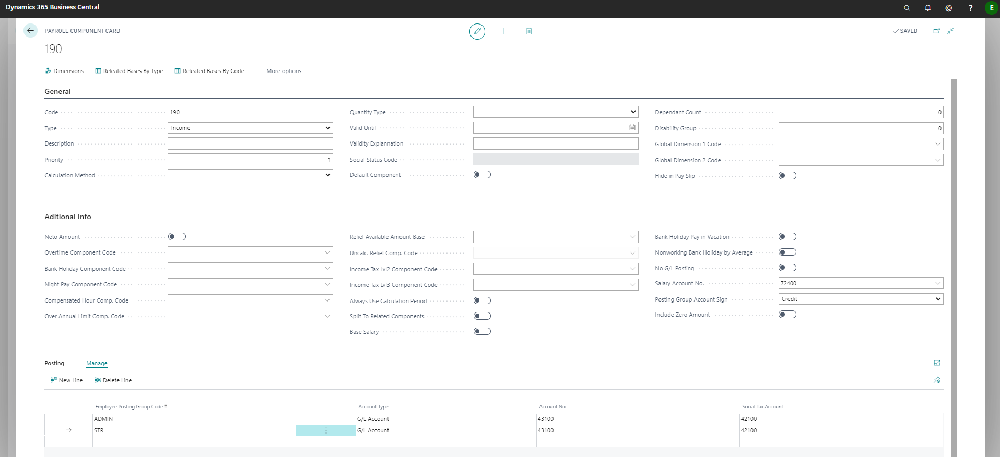

Absences
All deviations from the planned working hours must be entered on a separate absence card. All absence cards are listed in the Employee Absences register.
Registering a new absence
To enter a new absence, you must go to the Employee Absences register and create a new one Employee Absence Card by clicking on the button New.
You can define dimensions for employee absence by clicking  .
.
By entering Employee No. it is possible to view the details of the selected employee  , so that you can easily view, for example, records of previous absences or salary data for previous periods.
, so that you can easily view, for example, records of previous absences or salary data for previous periods.
If an employee has entered a related absence and the dates overlap, it is possible to recalculate by clicking on  . By default, recalculation entries are shown on the next month for which payroll has not been calculated.
. By default, recalculation entries are shown on the next month for which payroll has not been calculated.
In the Average Gain Buffer you can view the data of the previous months on the average earnings 
Cancel Absence  and Cancel Recalculation
and Cancel Recalculation  options related to absences are available below the toolbar button Navigate. The function Recalculate is used if working hours were recorded during the registered absence. Recalculation can be canceled with . In all other cases, the function Cancel absence should be used.
options related to absences are available below the toolbar button Navigate. The function Recalculate is used if working hours were recorded during the registered absence. Recalculation can be canceled with . In all other cases, the function Cancel absence should be used.
Tip
When you cancel your absence, the system does not recalculate the salary. If it is necessary to adjust the number of days worked during this period, the cancellation must be made in the same month.

Tab:General
| Field Name | Description |
|---|---|
| Employee No. | Employee selected from the list to register absence. |
| Cause of Absence Code | Code selected from the list. |
| From Date | Date from which the absence is valid. |
| To Date | Date until which the absence is valid. |
| Description | Name of Cause of Absence code, system generated field. |
Tab:Payroll
| Field Name | Description |
|---|---|
| Unjustified Absence | Enable if the absence is unjustified and there is no need to calculate the payment. |
| Calculate in Payroll as | Settings from the absence list, system generated field. |
| Calculate in Year | The system enters automatically based on the date of absence. Editable field. |
| Calculate in Month | The system enters automatically based on the date of absence. Editable field. |
| Days | The system enters automatically, based on the calendar assigned to the employee. |
| Hours | The system enters automatically, based on the calendar assigned to the employee. |
| Skip in Prepayment | If enabled, the calculated absence fee will not be paid in Prepayments. |
| Related Payroll Line | The system automatically indicates if a related document exists for the entry. |
| Related Payroll Header | The system indicates automatically when an absence calculation is made. |
| Global Dimension 1 Code | Indicate the 1st global dimension, if applicable. |
| Global Dimension 2 Code | Indicates the 2nd global dimension, if applicable. |
| Related Entry No. | Absence linking function. If the employee has entered a series of absences, which must be calculated with the same average earnings, then this absence should be indicated in this field. |
| Keep salary with average | Enables if the average salary should be kept during the absence. |
| Day Average Gain | If you need to change the daily average earnings, enter it manually in the field before calculating. |
| Hour Average Gain | If it is necessary to change the hourly average earnings, enter it manually in the field before the calculation. |
| Average Gain Changed | The system enables it automatically if values are entered in the daily or hourly average gain fields. |
Vacation
The balance of the available vacation days can be checked on the employee card by pressing the buttons Process () - Unused vacation days ().
You can adjust the balance of vacation days through the field Vacation Day Correction (), where to increase the number of unused days the number of corrective days must be entered with a minus sign, but to decrease - with a plus sign.

Vacation accruals
By opening the report named Average Gain With amounts and selecting a date of your choice in the report print window (), unused vacation days of employees, as well as their costs can be calculated, taking into account the average daily earnings of employees and the costs of the employer's social tax. Also, you can send () the amount of vacation accrual entries to the general ledger journal (). The code of the accrual component must indicate () the code of the payroll component, which indicates all the accounting settings. It is recommended to create a component that will not be used in salary calculations. As an example, component card no. 190 see below.


When you run a report, transactions will be created in the specified ledger journal:
- Vacation accrual postings at the reporting date.
- Vacation accruals with a minus sign with the last date of the following month.
In case it is necessary to create vacation accruals by dimensions, it is necessary to indicate appropriate dimensions in the reference parameters.
Sick leave
All sick lists received from employees are registered in the Employee Absences register.
Sick leave payment settings are included in the relevant cause of absence code cards. The functional fields of the absence code cards are described in detail in the chapter Causes of Absence.
If a temporary sick leave is submitted after the salary calculation (salary calculation has been paid or posted), then it is recommended to perform the calculation in the month of the end of the sick leave.
Absence analytics
OIn the list of Absence Registration are listed all data on employee absences.
For more convenient absence data analysis, we recommend using filters in the list. For more convenient data processing, we recommend opening the selected information in Excel by clicking the button * Open in Excel* on the toolbar.